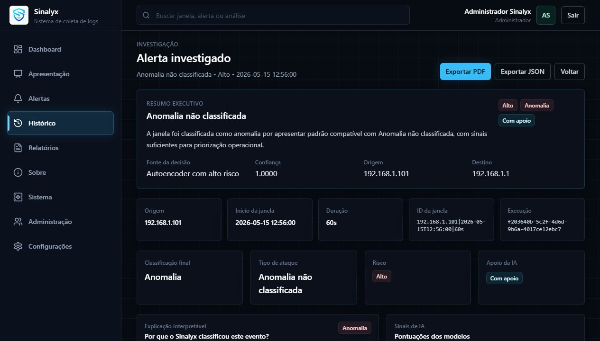
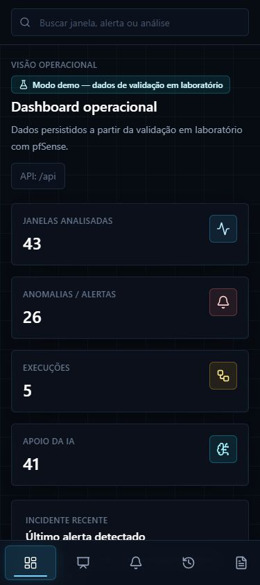

Do log bruto à triagem documentada
O Sinalyx recebe ou coleta registros do filter.log, normaliza eventos, agrega informações por janelas, executa um pipeline híbrido de detecção e persiste os resultados para consulta em API e dashboard.
Mensagem principal
FastAPI, PostgreSQL e Vue são componentes da solução. O case é sobre análise de logs, arquitetura de dados e apoio à segurança defensiva.
Volume, ruído e contexto fragmentado
Logs de firewall têm formato e volume que dificultam a leitura manual contínua. Uma única linha raramente contém contexto suficiente para priorizar um evento.
- Transformar registros brutos em dados estruturados e comparáveis.
- Agrupar sinais por janela sem esconder o contexto da análise.
- Combinar modelos e regras sem tratar a classificação como verdade absoluta.
- Persistir histórico para investigação e comparação.
Pipeline separado por responsabilidade
- 01 · ColetaSSH/SFTP ou arquivo finito, com processamento incremental do log.
- 02 · ParsingNormalização canônica e validação dos eventos do pfSense.
- 03 · FeaturesAgregação por janelas e engenharia de atributos para análise.
- 04 · DecisãoIsolation Forest, autoencoder, heurística, ensemble e decision engine conforme implementado.
- 05 · PersistênciaResultados e histórico organizados no PostgreSQL.
- 06 · TriagemAPI e dashboard apresentam alertas, histórico, investigação e estado operacional.
Implementado, em validação e planejado
Implementado
- Coleta e processamento incremental do
filter.log. - Parser, validação e engenharia de features por janela.
- Modelos, heurística, ensemble e decision engine.
- API FastAPI com autenticação e endpoints operacionais.
- Persistência PostgreSQL e dashboard Vue 3.
Em validação
- Comportamento da coleta contínua conforme configuração do ambiente pfSense.
- Classificação em cenários de baixo volume e revisão de falsos negativos.
- Contexto temporal para padrões lentos distribuídos entre janelas.
Interface para triagem e investigação





Controles para manter o projeto honesto
- Separar parsing, features, decisão, persistência e apresentação.
- Combinar modelos e regras para preservar explicabilidade operacional.
- Não promover automaticamente experimentos que não superam a validação atual.
- Manter logs reais, datasets, modelos treinados, dumps e segredos fora do Git.
- Tratar o dashboard como apoio à triagem, não como substituto de SIEM ou analista.
O que ainda precisa evoluir
- Não substitui análise humana nem um SIEM de produção.
- Padrões lentos podem perder contexto quando distribuídos entre várias janelas.
- Modelos e dados reais precisam ser restaurados em ambiente privado.
- O projeto continua em desenvolvimento e validação acadêmica.
Próximos passos
- Aprimorar contexto temporal persistente.
- Consolidar calibração com novos cenários.
- Evoluir observabilidade, operação contínua e documentação de implantação.
O repositório diferencia implementação, experimentos, limitações e roadmap.
Abrir no GitHub